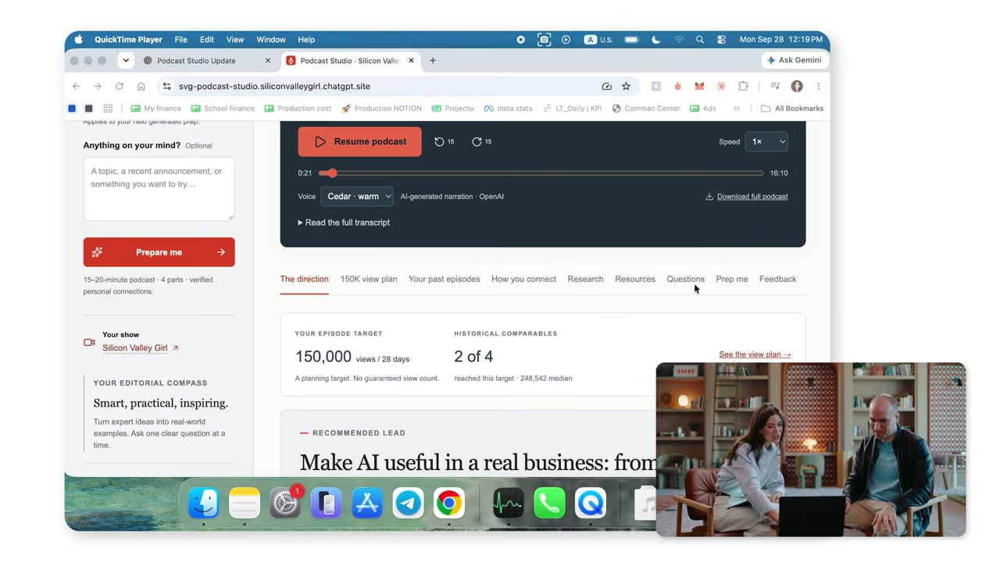

Executive summary
The opportunity is not more software; it is more solved problems
Greg Brockman argues that AI has crossed from answering questions to performing meaningful work. He says he no longer writes software directly: he directs an AI, reviews what it produces, and supplies feedback. The important change is not the disappearance of engineering. It is that implementation effort is collapsing, so people can attempt solutions that were previously too small, specialised, or expensive to justify.
That creates a trap. A product whose value is “we added prompts around a weak model” may disappear when the next model internalises the workaround. A durable product instead compounds with better intelligence: it understands a real workflow, has trusted access to the right context, serves several stakeholders, learns from outcomes, and owns the difficult last mile between a model output and a result the customer values.
- Start before you feel ready. Capability discovery is empirical. Ask the system to do slightly more than it did yesterday and inspect what happens.
- Design for the capability curve. Build workflows that improve when models become smarter, not scaffolding that exists only because today's model is weak.
- Domain expertise becomes product leverage. Generic intelligence still needs local vocabulary, permissions, relationships, edge cases, and outcome definitions.
- Automate after repetition. Perform a workflow manually several times, understand its invariants and failure modes, then automate it.
- Keep human accountability. AI can propose and execute more, but people still set goals, define boundaries, review consequential actions, and own customer outcomes.
Evidence boundary. This article distinguishes Brockman's opinions and examples from claims independently supported by OpenAI's published material. The interview is strategic guidance, not a controlled productivity study, product specification, or investment forecast.
The application gap
A general interface still creates a discovery problem
Brockman describes a paradox: ChatGPT can do an enormous range of work, yet a blank chat box makes that range hard to perceive. Users often need several successful use cases before AI becomes habitual. The system may be capable of researching, building a presentation, analysing a spreadsheet, drafting a reply, or creating an application, but the user must first imagine the request.
His preferred direction is an agent that reduces this “white page” burden. Instead of waiting for a perfectly formed prompt, it notices unresolved work, gathers relevant context, proposes a useful next step, and asks for approval where judgment is required. That turns the interface from a command line for intelligence into an ongoing collaboration.
Product lesson. Capability discovery should be part of the product. Show users what the system can do using their real work, but do not cross the line from helpful suggestion to unapproved action.
New craft
Directing AI replaces some typing, not engineering judgment
The phrase “I don't write software anymore” is easy to overread. In the same breath, Brockman describes guidance and repeated feedback. The work moves up a level:
Intent
Define the problem, user, desired outcome, and what “good” means.
Context
Provide data, examples, constraints, tools, and access to the relevant environment.
Verification
Inspect behaviour, tests, evidence, security, and failure modes rather than accepting fluent output.
Iteration
Turn observed mistakes and preferences into better instructions, evals, interfaces, and system design.
For an AI engineer, this is not permission to stop understanding systems. It raises the cost of weak judgment: an agent can create more code and more actions than a person can manually inspect, so executable specifications, tests, observability, and bounded permissions become more important.
Podcast Studio demo
The valuable asset is the learning loop, not the generated page

Marina Mogilko shows an AI-built application that prepares interviews using the guest, episode length, past episodes, editorial style, and a target such as YouTube views. It produces research, questions, title and thumbnail directions. Brockman immediately asks whether the same context can continue into post-production: ingest the interview, cut the episode, prepare the assets, and learn from the published result.
That suggestion exposes the difference between an AI demo and an AI product. A demo generates an artefact. A product closes a loop:
- Capture the creator's goal and editorial constraints.
- Research the guest and retrieve comparable episodes.
- Propose a plan, questions, and hypotheses for review.
- Observe the actual interview and production decisions.
- Generate and edit the final package under human direction.
- Measure retention, corrections, audience response, and production effort.
- Use those outcomes to improve the next episode.
The moat is therefore not the page generator. It is the accumulated editorial context, workflow integration, feedback data, and trust that let the system improve without silently changing the creator's voice.
Product durability
Avoid businesses built on temporary model gaps
Brockman separates two kinds of work. Some products scale as models improve. Others compensate for a current weakness with elaborate prompting or hand-built machinery. The second category may be useful today, but its differentiation can evaporate when a model upgrade makes the workaround native.
| Layer | Question | Durable evidence | Risk |
|---|---|---|---|
| Problem | Does the customer have an expensive, frequent, meaningful outcome to achieve? | Observed workflow, willingness to pay, baseline cost. | A clever demo without demand. |
| Domain | Do you understand language, exceptions, incentives, and stakeholder conflict? | Expert review, edge-case corpus, outcome definitions. | Generic behaviour in a regulated or nuanced workflow. |
| Context | Can the system access the right data safely and at the right moment? | Trusted integrations, provenance, permissions, freshness. | A model that is smart but blind to the organisation. |
| Workflow | Can insight become a completed, reversible action? | State, approvals, retries, audit trail, human takeover. | A recommendation that creates more manual work. |
| Learning | Does the product improve from real outcomes? | Evals, overrides, customer feedback, longitudinal metrics. | Optimising for plausible output rather than value. |
| Relationship | Do users trust the product with ongoing responsibility? | Reliability, transparency, recourse, accumulated preference. | Switching remains effortless when models commoditise. |
Entrepreneurship
Implementation gets cheaper; domain discovery gets more valuable
The interview predicts a “renaissance of entrepreneurship.” When a small team can call on software, research, design, and operational assistance, many narrow opportunities become economically viable. Brockman gives the example of an antique-watch shop whose owner assumes AI has nothing to offer. A conversational build can create a site and turn the history of each watch into rich product storytelling.
But cheaper implementation does not answer which business to build. The entrepreneur still has to identify a real problem, understand the customer, discover the right interaction, earn access to data, and build relationships. In education, for example, a product must reconcile the needs of students, teachers, parents, administrators, and purchasers. Better code generation does not eliminate that stakeholder design.
The durable moat is often outside the model. It can be distribution, proprietary workflow data, trusted integrations, regulatory competence, service delivery, or a distinctive understanding of the customer. Those assets become more productive with stronger models rather than being replaced by them.
Agent depth
“Morning briefing” describes a ladder, not one feature
Brockman defends the familiar morning-briefing example by showing how much depth hides behind the label. The same product name can represent radically different levels of useful work:
1. Digest
Repeat notifications and summarise obvious updates. Convenient, but easy to ignore.
2. Prioritise
Identify unresolved messages, rank them by consequence, and explain what needs attention.
3. Research
Read documents and history, investigate open questions, and compress the evidence needed for a decision.
4. Prepare action
Coordinate with people and systems, assemble the transaction, and stop at the approval boundary.
This is a useful evaluation model for agents. Do not ask only whether the system produced a briefing. Ask how much uncertainty it removed, whether the sources are traceable, what action it prepared, which permissions it used, and whether the user can understand and reverse the result.
Measurement
Tokens are an adoption signal, not business value
Brockman says OpenAI looks at token usage alongside proxies such as lines of code, commits, and pull requests. He explicitly acknowledges that these are imperfect. OpenAI's current admin analytics similarly separates usage and spend from outcomes such as merged commits and AI-contributed lines. That separation matters: more tokens can mean deeper useful work, wasted loops, or both.
The right optimisation is not “max tokens.” It is sufficient compute on a valuable, well-specified problem, with verification appropriate to the stakes. Brockman's scientific example—OpenAI's coordinated multi-agent work on Navier–Stokes—shows an extreme version: roughly 10,000 concurrent agents and enormous token use were directed at a tightly defined mathematical target, followed by formal verification. The scale is meaningful because the problem and verification standard are meaningful.
Practical starting point
Do it manually, repeat it, then automate it
When asked where a beginner should start, Brockman recommends a small pain point rather than an ambitious autonomous system. Copy an email into the model. Ask for help. Review the answer. On the next attempt, connect the inbox. Once the process has been performed three to five times, its stable pattern becomes visible enough to automate responsibly.
- Pick one recurring friction. It should have a clear owner, input, output, and definition of success.
- Run it interactively. Supply the context manually and observe which facts, tools, and decisions are actually needed.
- Record corrections. Capture where the model misunderstands, what evidence the reviewer checks, and which actions feel risky.
- Define the contract. Specify allowed inputs, output schema, permissions, approval thresholds, failure path, and metrics.
- Automate the repeatable portion. Keep uncertain and consequential transitions visible to a person.
- Evaluate outcomes. Compare against the manual baseline and expand only when quality and control remain acceptable.
This advice is stronger than “just start.” It says understanding precedes autonomy. Repetition generates the process knowledge needed to build a reliable agent.
Human control
Proactivity expands the control surface
The interview promotes OpenAI dots as an always-on agent with a cloud computer, persistent context, connected applications, recurring work, and optional local-computer access. OpenAI's current help documentation confirms those capabilities and also makes the boundaries concrete: plans and regional availability vary; connected apps are permissioned; enterprise access is initially off; and actions can require approvals.
Those are not administrative details. A proactive agent can accumulate context, cross application boundaries, continue between conversations, and act when the user is absent. The safety model therefore needs more than a friendly persona:
- Explicit goals, scope, time horizon, and stop conditions.
- Least-privilege access to each app, folder, workspace, and computer.
- Separate read, draft, propose, and execute permissions.
- Action-time confirmation for irreversible, external, financial, or sensitive steps.
- Observable task history, evidence, tool calls, errors, and state changes.
- Easy pause, takeover, rollback, revocation, and deletion paths.
Brockman's closing principle is the right one: goals should come from people, and humans should remain in control. The practical work is translating that statement into enforceable product mechanics.
Claim check
What is supported, and what remains interview testimony
| Layer | Claim | Evidence status | Caution |
|---|---|---|---|
| ChatGPT reach | 1.2 billion weekly active users. | Interview claim. OpenAI publicly confirms more than 1 billion weekly users, not the exact 1.2 billion figure in the sources reviewed. | Rapidly changing operational metric. |
| Health use | About 300 million people use ChatGPT weekly for health queries. | Interview claim; no matching first-party methodology was located in this review. | Category definition and counting method are unknown. |
| Dots | Always-on agent with GPT-6 Astra, cloud computer, connected apps, memory, and recurring work. | Confirmed in current OpenAI Help Center documentation. | Availability, plan, region, permissions, and launch limitations apply. |
| Navier–Stokes | On the order of 10,000 agents worked on the result. | Confirmed by OpenAI's publication, which also reports 2.7 million messages and about 130 billion output tokens for that effort. | OpenAI-authored result; scientific validation should include the paper and formal proof. |
| Productivity | OpenAI relates usage to code outcomes. | Confirmed directionally by OpenAI's admin analytics documentation. | Correlation and proxy metrics are not causal proof of ROI. |
| Entrepreneurship | A major renaissance will accelerate over the next one to two years. | Brockman's forecast. | Useful thesis, not a measurable fact. |
My take
The best idea is to build something that welcomes the next model
The interview's strongest advice is architectural: a durable AI product should become better when the model improves. If a stronger model threatens the company, the company probably owns too little of the problem. If a stronger model makes its data, workflow, relationships, and feedback loops more valuable, it has a healthier foundation.
I would add one qualification to the ambition message. Higher ambition should mean a more meaningful outcome, not immediate maximum autonomy. The Podcast Studio becomes ambitious when it learns across the full production loop; it does not need permission to publish an episode without review. The morning agent becomes valuable when it removes uncertainty and prepares decisions; it does not need unrestricted authority over email, purchasing, and external relationships.
For builders, the near-term advantage is therefore not prompting harder. It is choosing a narrow problem, understanding it deeply, giving the model the right context and tools, designing the human boundary, and measuring whether the result improves real work.
Video map
Where the main ideas appear
- Proactive assistants
- Directing AI to write software
- Podcast Studio demo
- Small-business leverage
- What makes an app worth paying for
- Building beyond model limitations
- Domain expertise
- The depth of briefing agents
- Productivity measurement
- Start small and automate after repetition
- Human control and guardrails
- A one-hour starting point
Sources
Primary interview and first-party checks
- Silicon Valley Girl — OpenAI Co-Founder: Start Building With AI Before You Feel Ready. Primary interview and auto-generated transcript.
- OpenAI Help Center — Getting started with your dot. Current capabilities, availability, cloud and local computer access, connected apps, and scheduled work.
- OpenAI Help Center — Dots privacy, security, and safety FAQs. Permissions, proactive research, custom rules, and action boundaries.
- OpenAI — How to connect AI usage to business value. Separation of usage, spend, task insights, and engineering outcome metrics.
- OpenAI — On the Navier–Stokes Millennium Prize Problem. Agent scale, token use, process, formalisation, and OpenAI's stated result.
- OpenAI — A milestone in expanding access to AI. First-party confirmation of more than one billion weekly active ChatGPT users.
Source review completed October 4, 2026. OpenAI product details and usage figures can change rapidly. Examples and forecasts attributed to Greg Brockman remain his interview statements unless independently identified above.